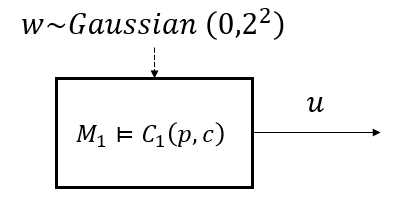
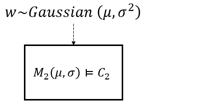
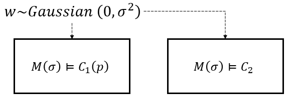
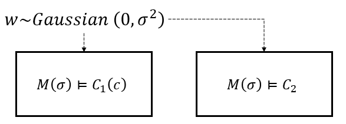
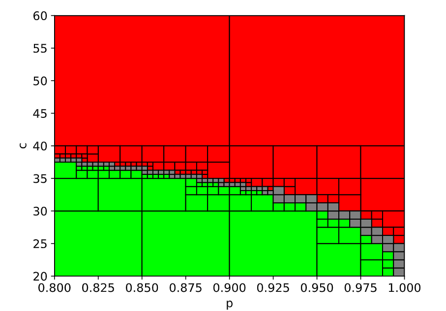

5. Parameter Synthesis with A/G Contract¶
5.1. Parameterization of StSTL Formulas and Component Models¶
Parameteric Stochastic Signal Temporal Logic (PStSTL) [Oh22] extends StSTL [Nuzzo19] with parameters. Let \(\pi \in \Pi\) be a set of parameters partitioned into two disjoint sets of signal parameters, \(\pi_s = \{ s_1, s_2, \ldots \}\), with domain \(\Pi_s\), and probability threshold parameters, \(\pi_p = \{ p_1, p_2, \ldots \}\), with domain \(\Pi_p\). We denote a PStSTL formula \(\phi\) parametrized by \(\pi\) by \(\phi(\pi)\). For example, \(\phi(\pi) := \mathbf{F}_{[0,5]} (x + s)^{\left[ p \right]}\) has parameter set \(\pi = \{ s, p \}\). Similarly to how an A/G contract can be expressed using STL or StSTL, PStSTL can be utilized to write an A/G contract. We denote such A/G contract as PStSTL A/G contract.
During the design process, some constants in a system may be regarded as design parameters. We represent such scenario with a parametric system (component) \(M(\pi_M)\), where \(\pi_M\) is a set of parameters. In this chapter, we show how PyCASSE can be used to synthesize optimal parameter values, guided by the cost function \(J\), such that the implementation relationship, i.e., \(M(\pi_M) \models C(\pi_C)\), or the refinement relationship, i.e., \(C_2(\pi_C) \preceq C_1\), hold.
5.2. Parameter Synthesis with PStSTL A/G Contract in PyCASSE¶
5.2.1. Synthesizing Parameters for Requirements¶
{kind=link}
Consider a component \(M_1\) which has a nondeterministic input \(w\) and an output \(u\). A PStSTL A/G contract for \(M\), \(C_1(p,c) = (V_1,A_1,G_1(p,c))\) where \(V_1 := \{ u, w \}\), \(A_1 := \top\), and \(G_1(p,c) := \mathbb{P} \{ w + u \leq c \} \geq p\), can be created as follows:
from pycasse import *
c1 = contract('c1') # Create a contract c1
c1.add_nondeter_vars(['w'], mean = [0], \
cov = [[2**2]], dtypes=['GAUSSIAN']) # Set nondeterministic variables
c1.add_param_vars(['p', 'c'], bounds = [[0, 1], [-4, 4]]) # Set parameteric variables
c1.set_assume('True') # Set/define the assumptions
c1.set_guaran('P[p] (w <= c)') # Set/define the guarantees
c1.saturate() # Saturate c
c1.printInfo() # Print c
Given the cost function \(J(p, c) = -10p + c\), the optimal parameter values which guarantee the implementation relationship, i.e., \(M_1 \models C_1(p, c)\), can be found by running:
c1.find_opt_param({'p': -10, 'c': 1}, N=200) # Find the optimal parameters (p, c)
{kind=link}
All the parameter values in the green boxes (SAT partitions) guarantee that the implementation relationship holds. The red boxes indicate UNSAT partitions and the grey boxes indicate UNDET partitions. The set of optimal parameter values is \((p^*, c^*) = (0.875, 3)\), which is within the SAT region.
5.2.2. Synthesizing Parameters for Components¶
{kind=link}
Consider a parameterized component \(M_2(\mu, \sigma)\) which only accepts a nondeterministic input \(w\). An A/G contract for \(M_2(\mu, \sigma)\), \(C_2 = (V_2,A_2,G_2)\) where \(V_2 := \{ w \}\), \(A_2 := \top\), and \(G_2 := \mathbb{P} \{ w \leq 0 \} \geq 0.99\) can be created as follows:
c2 = contract('c2') # Create a contract c2
c2.add_nondeter_vars(['w'], mean = ['mean'], \
cov = [['sigma^2']], dtypes=['GAUSSIAN']) # Set nondeterministic variables
c2.add_param_vars(['mean', 'sigma'], bounds = [[-0.1, 0.1], [0.01, 0.1]]) # Set parameteric variables
c2.set_assume('True') # Set/define the assumptions
c2.set_guaran('P[0.99] (w <= 0)') # Set/define the guarantees
c2.saturate() # Saturate c
c1.printInfo() # Print c
Given the cost function \(J(\mu, \sigma) = \mu - 10 \sigma\), the optimal parameter values which guarantee the implementation relationship, i.e., \(M_2(\mu, \sigma) \models C_2\), can be found by running:
c2.find_opt_param({'mean': 1, 'sigma': -10}, N=200) # Find the optimal parameters (mean, sigma)
{kind=link}
The set of optimal parameter values is \((\mu^*, \sigma^*) = (-0.1, 0.0409375)\), which is within the SAT region.
5.2.3. Synthesizing Parameters under Refinement¶
{kind=link}
Consider the parameterized component \(M(\sigma)\) which only accepts a nondeterministic input \(w\). Two A/G contracts for \(M(\sigma)\), \(C_1(p) = (V_1,A_1,G_1(p))\) and \(C_2 = (V_2,A_2,G_2)\) can be created as follows:
from pycasse import *
# Build a contract
c1 = contract('c1') # Create a contract c1
c1.add_param_vars(['p', 'sigma'], bounds = [[0, 1], [0.05, 2]]) # Set parameteric variables
c1.add_nondeter_vars(['w'], mean = [0], \
cov = [['sigma^2']], dtypes=['GAUSSIAN']) # Set nondeterministic variables
c1.set_assume('True') # Set/define the assumptions
c1.set_guaran('P[p] (w <= 1.5)') # Set/define the guarantees
c1.saturate() # Saturate c1
# Build a contract
c2 = contract('c2') # Create a contract c2
c2.add_param_vars(['sigma'], bounds = [[0.05, 2]]) # Set parameteric variables
c2.add_nondeter_vars(['w'], mean = [0], \
cov = [['sigma^2']], dtypes=['GAUSSIAN']) # Set nondeterministic variables
c2.set_assume('True') # Set/define the assumptions
c2.set_guaran('P[0.9] (w <= 1.5)') # Set/define the guarantees
c2.saturate() # Saturate c2
where \(V_1, V_2 := \{ w \}\), \(A_1, A_2 := \top\), \(G_1(p) := \mathbb{P} \{ w \leq 1.5 \} \geq p\), and \(G_2 := \mathbb{P} \{ w \leq 1.5 \} \geq 0.9\).
Given the cost function \(J(p, \sigma) = - p - \sigma\), the optimal parameter values which guarantee the refinement relationship, i.e., \(C_2(p) \preceq C_1\), while \(M(\sigma) \models C_2(p)\) can be found by running:
c2.find_opt_refine_param(c1, {'p': -1, 'sigma': -1}, N=200) # Find an optimal set of parameters for refinement to hold
{kind=link}
The set of optimal parameter values is \((p^*, \sigma^*) = (1.147, 0.875)\), which is within the SAT region.
{kind=link}
Now, consider the parameterized component \(M(\sigma)\) which only accepts a nondeterministic input \(w\). Two A/G contracts for \(M(\sigma)\), \(C_1(c) = (V_1,A_1,G_1(c))\) and \(C_2 = (V_2,A_2,G_2)\) can be created as follows:
from pycasse import *
# Build a contract
c1 = contract('c1') # Create a contract c1
c1.add_param_vars(['sigma', 'c'], bounds = [[0.05, 2], [0, 2]])
c1.add_nondeter_vars(['w'], mean = [0], \
cov = [['sigma^2']], dtypes=['GAUSSIAN']) # Set nondeterministic uncontrolled variables
c1.set_assume('True') # Set/define the assumptions
c1.set_guaran('P[0.9] (w <= c)') # Set/define the guarantees
c1.saturate() # Saturate c1
c1.printInfo() # Print c1
# Build a contract
c2 = contract('c2') # Create a contract c2
c2.add_param_vars(['sigma'], bounds = [[0.05, 2]])
c2.add_nondeter_vars(['w'], mean = [0], \
cov = [['sigma^2']], dtypes=['GAUSSIAN']) # Set nondeterministic uncontrolled variables
c2.set_assume('True') # Set/define the assumptions
c2.set_guaran('P[0.9] (w <= 1.5)') # Set/define the guarantees
c2.saturate() # Saturate c2
c2.printInfo() # Print c2
start = time.time()
c2.find_opt_refine_param(c1, {'sigma': -10, 'c': 1}, N=200)
end = time.time()
print("Time elaspsed for MILP: {} [seconds].\n".format(end - start))
where \(V_1, V_2 := \{ w \}\), \(A_1, A_2 := \top\), \(G_1(c) := \mathbb{P} \{ w \leq c \} \geq 0.9\), and \(G_2 := \mathbb{P} \{ w \leq 1.5 \} \geq 0.9\).
Given the cost function \(J(\sigma, c) = - 10 \sigma + c\), the optimal parameter values which guarantee the refinement relationship, i.e., \(C_2 \preceq C_1(c)\), while \(M(\sigma) \models C_1(c)\) can be found by running:
c2.find_opt_refine_param(c1, {'sigma': -10, 'c': 1}, N=200) # Find an optimal set of parameters for refinement to hold
{kind=link}
The set of optimal parameter values is \((\sigma^*, c^*) = (1.147, 1.5)\), which is within the SAT region.
5.2.4. Synthesizing Parameters for Components with Dynamics¶
{kind=link}
The dynamics of the point-mass robot \(M\) on a line is given as \(x_{k+1} = A x_k + B u_k + w_k\) where \(x_k = [s_k, v_k]^T\) and \(u_k = [a_k]\). The goal is to synthesize optimal parameter values \((p^*, c^*)\) such that the robot eventually in \(10~s\) reaches the region \(\{ r | r \geq c\}\) with probability larger than or equal to \(p\), i.e., \(\phi_G := \mathbf{F}_{[0,10]} (\mathbb{P} \{ s \geq c \} \geq p)\) is satisfied.
from pycasse import *
# Build a contract
c = contract('c') # Create a contract c
c.add_deter_vars(['s', 'v', 'a'],
bounds = [[-100, 2000], [-5, 10], [-1, 2]]) # Set a deterministic variables
c.add_param_vars(['p', 'c'],
bounds = [[0.8, 1], [20, 60]])
c.set_assume('G[0,9] (a == 1)') # Set/define the assumptions
c.set_guaran('F[0,10] (P[p] (s => c))') # Set/define the guarantees
c.saturate() # Saturate c
c.printInfo() # Print c
# Dynamics
dynamics = {'x': ['s', 'v'],
'u': ['a'],
'A': [[1, 1], [0, 1]],
'B': [[0], [1]],
'Q': [[0, 0], [0, 0.5**2]]
}
# Initial conditions
init_conditions = ['s == 0', 'v == 0']
where \(V := \{ s, v, a \}\), \(A := \mathbf{G}_{[0,9]} (a=1)\), \(G(p) := \mathbf{F}_{[0,10]} \mathbb{P} \{ c \leq s \} \geq p\).
Given the cost function \(J(p, c) = - 100 p - c\), the optimal parameter values which guarantee the refinement relationship, i.e., \(M \models C(p, c)\) can be found by running:
{kind=link}
The set of optimal parameter values is \((p^*, c^*) = (0.9438, 31.2500)\), which is within the SAT region.